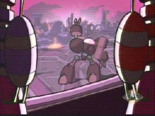
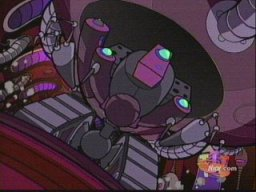
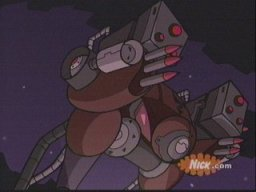
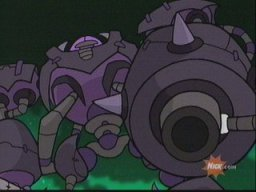
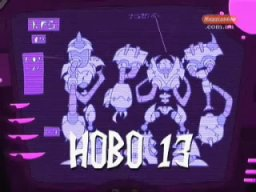
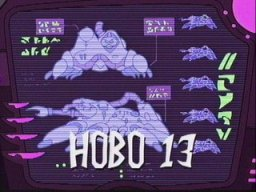
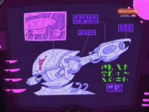

Irken ground vehicles
|
These vehicles are made for ground assaults. |
|
|
 |
Name: Frontline BattleMech Appearances: The Nightmare Begins, The Trial
This large destructive mech was designed as a first wave assault, rushing into battle and destroying as much as possible. It is heavily armed with gun hands and a large canon on its back. A crew of technicians operate it from the inside.
Zim stole one of these at the beginning of Operation Impending Doom I and used it for a destructive rampage on Irk. |
|
 |
Name: Hunter-destroyer machine Appearances: Bad, Bad Rubber Piggy
The hunter-destroyer machine is a robot that locks onto its target and kills relentlessly. Zim owned one that he planned to use on Dib. He most likely got it from the Vortians, who have always given Zim stuff. |
|
 |
Name: MegaDoomer Combat Stealth Mech Appearances: MegaDoomer
A new development in Irken technology, this Vortian designed mech can turn invisible. This is useless, however, as the pilot can still be seen. The MegaDoomer is heavily armed, complete with doom canon. It was most likely designed for Invader usage. |
|
  |
Name: Maim Bot Appearances: Hobo 13, Tak: The Hideous New Girl
This mech is most likely a common weapon used in ground battle. Back when Zim was training on Devastis, he used a Maim Bot against a snack machine, sending the planet into a black out. Zim requested a Maim Bot from the Tallest. |
|
 |
Name: Plasmarin Battle Tank Appearances: Hobo 13, and possibly The Trial
Zim makes a request for one of these tanks from the Tallest. In the script for the Trial, it mentions Zim piloting a spider/crab tank. It may have been one of these. |
|
 |
Name: Death Wave Canon Appearances: Hobo 13
Zim makes a request for a death wave canon from the Tallest. Nothing is known about these, but they look very powerful. |